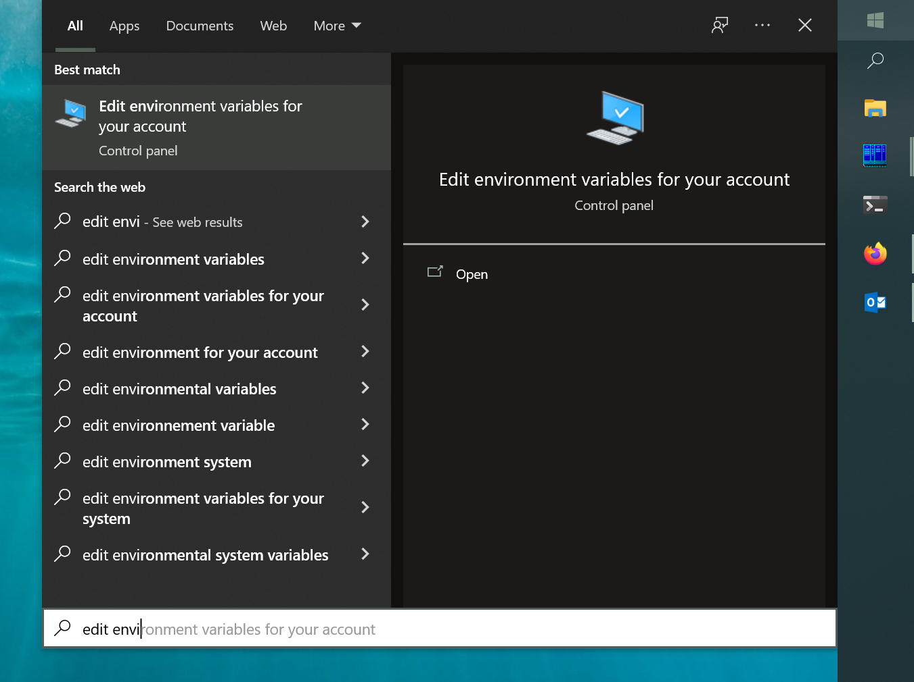

Tools Installation¶
Overview¶
This document describes how to install following PDS Registry tools (command-line applications):
Registry Manager is a tool to create Registry indices in OpenSearch and to manage data and LDDs (data dictionaries).
Standalone Harvest* extracts metadata from PDS4 labels and loads extracted metadata into PDS Registry.
Harvest Client has to be used with Scalable Harvest server components to submit asynchronous jobs to the server cluster.
Supplementer can be used to load supplemental metadata into PDS Registry.
Prerequisites¶
Java is required to run many Registry components and tools such as Harvest, Registry Manager, and API Server.
Only Java 11 is supported. Some applications, like Harvest or Registry Manager will not run with Java 1.8.
Test If Java Is Already Installed¶
To test if Java is already installed on your system, run the following command in a terminal:
java -version
If Java is already installed, you will see a message similar to this:
openjdk version "11.0.5" 2019-10-15
OpenJDK Runtime Environment 18.9 (build 11.0.5+10)
OpenJDK 64-Bit Server VM 18.9 (build 11.0.5+10, mixed mode)
Note
Your system might have multiple versions of Java installed, for example, JDK 1.8 and JDK 11. If JDK 11 is not the default, then set JAVA_HOME environment variable to point to JDK 11 before running Harvest or Registry Manager.
Java Installation¶
There are several distributions of Java:
OpenJDK (Free) can be downloaded from different sites, for example, adoptopenjdk.net or azul.com. Most Linux distributions have Open JDK in their standard repositories.
Oracle JDK (Commercial) can be downloaded from www.oracle.com. You must register and accept a license to download.
We recommend installing OpenJDK. Sites listed above have detailed installation instructions.
Tools¶
Registry Manager¶
Download latest stable release (tar or zip) from https://github.com/NASA-PDS/registry-mgr/releases/latest. Extract the tar (Linux, Mac) or zip (Windows) to a directory without spaces, such as /home/pds. On Linux you can use the following command:
% tar -xzvf registry-manager-x.y.z-bin.tar.gz
Set your environment variables REGISTRY_HOME and PATH as described in Configure Your Environment
Test by running:
% registry-manager --help
Standalone Harvest¶
Download latest stable release (tar or zip) from https://github.com/NASA-PDS/harvest/releases/latest. Extract the tar (Linux, Mac) or zip (Windows) to a directory without spaces, such as /home/pds. On Linux you can use the following command:
% tar -xzvf harvest-x.y.z-bin.tar.gz
Set your environment variables HARVEST_HOME and PATH as described in Configure Your Environment
Test by running:
% harvest --help
Supplementer¶
Note
Only install this if you plan to load supplemental metadata.
Download latest stable release (tar or zip) from https://github.com/NASA-PDS/supplementer/releases/latest. Extract the tar (Linux, Mac) or zip (Windows) to a directory without spaces, such as /home/pds. On Linux you can use the following command:
% tar -xzvf supplementer-x.y.z-bin.tar.gz
Harvest Client¶
Note
Only install this if you plan to use Scalable Harvest server.
Download latest stable release (tar or zip) from https://github.com/NASA-PDS/registry-harvest-cli/releases/latest. Extract the tar (Linux, Mac) or zip (Windows) to a directory without spaces, such as /home/pds. On Linux you can use the following command:
% tar -xzvf registry-harvest-cli-x.y.z-bin.tar.gz
Configure Your Environment¶
Note
Optional: Configuring your environment is preferred, but not required. You can always run any of the command-line tools from
the bin/ directory of the appropriate downloaded package.
Update PATH environment variable to be able to run registry tools from any directory.
Linux, Mac
For example, if you are using BASH, add the following to your .bash_profile:
# Update path as needed
HARVEST_HOME=/path/to/harvest-x.y.z
HARVEST_CLIENT_HOME=/path/to/harvest-client-x.y.z
REGISTRY_HOME=/path/to/registry-manager-x.y.z
SUPPLEMENTER_HOME=/path/to/supplementer-x.y.z
export PATH=${PATH}:$HARVEST_HOME/bin:$REGISTRY_HOME/bin
export PATH=${PATH}:$HARVEST_CLIENT_HOME/bin:$SUPPLEMENTER_HOME/bin:
For users not using BASH, see your appropriate shell documentation for setting environment variables.
Windows
Open the Start Menu and begin typing “environment”. Select “Edit environment variables for your account”.
“Environment Variables” dialog will open where you can edit “Path” variable. Add “bin” directory of Harvest, Registry Manager and other tools to “Path” variable.